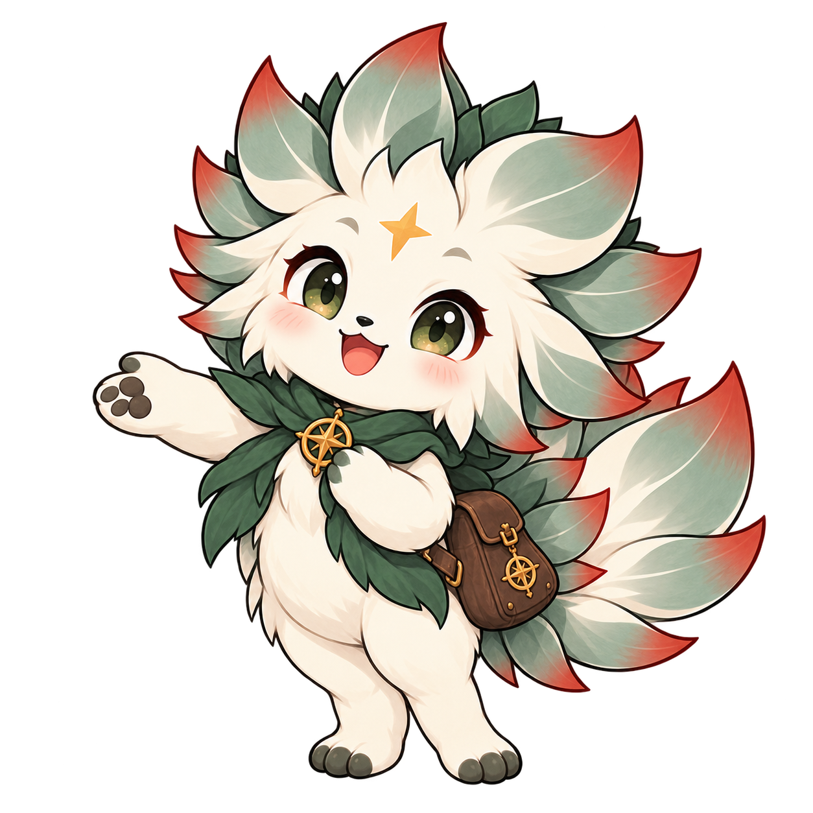

Ecologist · Researcher · Statistician
Phemelo
Rutlokoane.
I am an MSc student in Biodiversity and Conservation at the University of the Western Cape, researching climate change linked extreme events in coastal marine environments. My research focuses on remote sensing and spatial ecology.
My Masters research uses satellite remote sensing and spatial ecology to analyse how climate-driven extreme events disrupt coastal marine environments along the Southern hemisphere's highly productive upwelling zones. By using hiugh-resolution satellite data – such as sea surface temperarature anomalies and chlorophyll-a concentrations – I aim to identify patterns and trends in these extreme events and their impacts on marine ecosystems. Integrating these remote observations with spatial modelling techniques allows me to evaluate how shifting upwelling dynamics alter critical habitats and threaten regional biodiversity, ultimately informing conseravation strategies and management practices for these vulnerable coastal systems.
I build reproducible workflows that connect satellite imagery and field data to ecological inference, documenting my work in R and Python notebooks that others can follow and adapt.
- Based in
- Johannesburg, South Africa
- Conservation work
- Biodiversity monitoring & analysis
- Education
- University of the Western Cape
- Tools
- R · Python · QGIS · ArcGIS
Research interests
Remote sensing · Species distribution modelling · Ocean climatology · Biodiversity informatics · Landscape ecology · Wildlife monitoring
Behind the work
Data, monitoring & communication.
I work across wildlife analysis, monitoring tools, education and visual communication, connecting conservation evidence with the people who use it.

People · Projects · Practice
Work, in pictures.
A visual record of research, conservation and collaboration.
Wild Impact · Conservation & communication
Using TrapTagger to identify animals captured by camera traps, EventMeasure to analyise BRUVS footage, and creating educational content and visual communication for conservation audiences. This gallery shows a selection of the work I have done with Wild Impact throughout 2026.
2026
Carbon Sink Volunteer Work
Doing field sampling for a project assessing carbon sinks to quantify habitat health and track ecological restoration progress. I was collecting soil samples at the Berg River estuary to analyse for carbon content and other properties.
2025
Honours Research Fieldwork
Setting up LiDAR validation plots for my Honours research and ground-truthing satellite imagery for monitoring the distribution of the endemic Silver Tree on Table Mountain.
2025
Cape Flats Nature Reserve
My volunteer work at the Cape Flats Nature Reserve involved a range of activities focused on habitat restoration and biodiversity monitoring. I participated in nursery maintenance, which included tasks such as weeding, watering, and preparing seedlings for planting. Additionally, I was involved in clearing invasive alien plants to help restore native vegetation and expanding firebreaks for a prepared burn. One of the most exciting aspects of my volunteer work was conducting biodiversity surveys where we set up mammal traps and invertebrate pitfall traps to monitor local fauna. One of the highlights was a night survey that revealed a variety of nocturnal creatures, including scorpions, a chameleon, and a large spider.
2022 – 2024
Grootbos Private Nature Reserve — Night Survey
A mini-biodiversity night survey we conducted at Grootbos Private Nature Reserve as part of a funtime activity.
2024
University Practicals
These are the hands-on practicals in environmental sciences and ecology I was involved in — involving a constant discharge pumping test at a borehole, an insect collection project, and a DNA extraction practical.
2022 – 2024